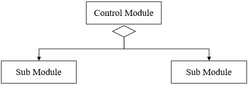
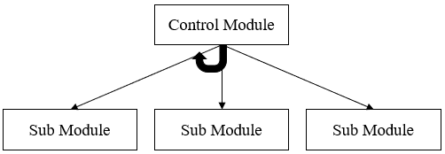
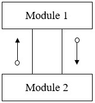
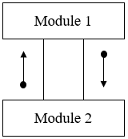

软件设计工具
Tools- H 图
- Hierarchy Chart
- 也叫 层级图、层次图
- 适合描绘软件的层次结构
- 整个结构由模块和调用关系组成
模块：使用矩形表示
调用关系：模块之间的连线
- 不体现模块的调用关系和数据流、控制流，而由 IPO 体现
- IPO
- 输入处理输出图
- 更多信息，请访问 IPO
- 详细设计阶段最常用的工具
- H 图把系统拆分成一个个小模块，IPO 图告诉程序员每个模块具体该设计及实现
- 模块需要什么数据、用户请求、原材料
- 模块怎么处理数据
- 处理完产生什么结果
- HIPO 图
- Hierarchy Plus Input/Processing/Output
- 层级图和输入处理输出图
- 美国IBM公司70年代发展起来的表示软件系统结构的工具
- 既可以描述软件总的模块层次结构--H图(层次图)，又可以描述每个模块输入/输出数据、处理功能及模块调用的详细情况--IPO图
- HIPO 图以模块分解的层次性以及模块内部输入、处理、输出三大基本部分为基础建立的

使用 PPT 绘制层次图

1. 输入 Input
2. 处理 Process
3. 输出 Output


软件结构图 Structure Chart
- Structure Charts - Software Engineering 描述一个软件系统由哪些模块组成
- 不仅描述调用关系，还描述传递的信息和调用方式
- 用来把一个复杂的系统拆解成子系统，子系统再拆解成模块
- 从上到下、从左到右分析
- 它强调的是“分解”，而不是“交互”
- 1. 模块 Module
- 每个模块代表系统中的过程或任务
- 每个模块对外表现为一个黑盒
- 使用矩形 Rectangle 表示
- 命名方法：动词+名词
- 三种类型：
控制模块：使用箭头指向子模块
子模块：子模块是另一个模块的部分
库模块：可重用且可以从任何模块调用
- 2 条件调用 Conditional Call
- 父模块根据条件，选择性 Selection 地调用子模块/if-else
- 使用钻石 Diamond 表示
- 3 循环调用 Repetitive call
- 父模块控制模块根据条件，重复地调用子模块/while/do-while
- 使用曲线箭头 Curved arrow 表示
- 4. 数据流 Data Flow
- 模块之间的数据流
- 它用一个带有空心圆点的有向箭头表示
- 可以使用注释内容说明
- 5. 控制流 Control Flow
- 模块之间的控制流程
- 它由一个带有末端实心圆的指向箭头表示
- 可以使用注释内容说明



